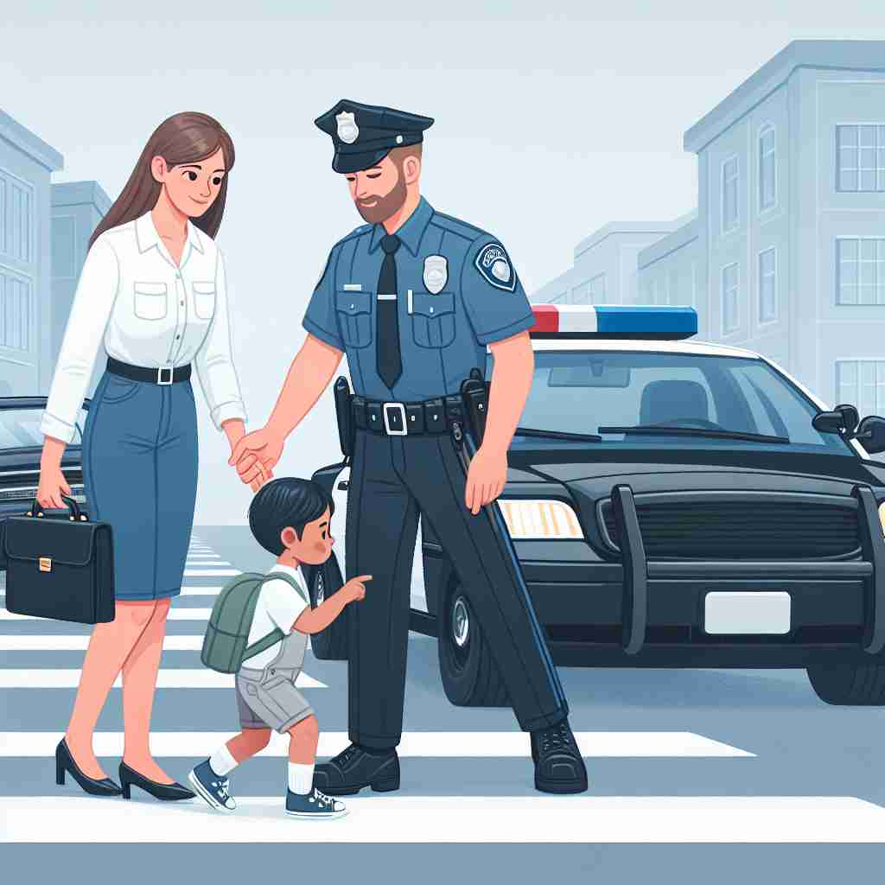

💬 The police are here to help control the situation.

💬 The police officer is helping to keep the community safe.

💬 The police officer on duty is helping the mother and child cross the street safely.
🔈 [pə'liːs]
🗝️ n. an official organization responsible for maintaining public order and safety
🖼️ 在一个繁忙的城市广场上，巨大的巡逻车驶过，周围的人群自觉让出一条宽阔的道路。车辆上的标志性蓝色灯光闪烁着，告诉大家警方正在维持公共秩序和安全。
🔍 police 的核心含义是维持公共秩序和安全的官方组织。想象这个组织如何从整体延伸到个人（警察），以及如何将其职能（管控和执法）应用到其他领域。这种思维可以帮助你更好地理解和记忆 police 的各种用法。
💬 The police are here to help control the situation.
💬 The police officer is helping to keep the community safe.
💬 The police officer on duty is helping the mother and child cross the street safely.
🌳 由词根 'polis'（城市）演变而来，意味着与城市治理和公共秩序相关。词尾 '-ice' 在法语中通常用于构成名词，整体表示 '警察，治安机构'。
💡 可以将 'police' 联想为 'polis'（城市）保护者，帮助记住该词与城市管理和公共安全的关系。
🗝️ n. members of a police force
🖼️ 在一个小镇的派出所里，几位警察正围坐在一起，倾听队长分配当日的巡逻任务。他们身着统一的制服，肩上挂着警徽，展现了作为一支警察队伍的身份。
💬 Two police officers arrived at the scene.
❓ 从组织延伸到组织中的个人
🗝️ v. to control or regulate (an area or activity)
🖼️ 在繁忙的市中心，警察设置路障指引交通，确保没有车辆违章停靠。这一切都在高效有序地进行，显示出他们对该区域的有效管理。
💬 The government police the internet for illegal content.
❓ 将警察的管控职能扩展到其他领域
🗝️ v. to enforce regulations or maintain order in
🖼️ 在一场激烈的足球比赛中，几名警察在场边巡视，密切观察人群的动向。他们随时准备介入，以维护现场的秩序和安全，防止任何可能的冲突。
💬 The teacher had to police the classroom to maintain discipline.
❓ 将警察的执法职能应用于其他情境